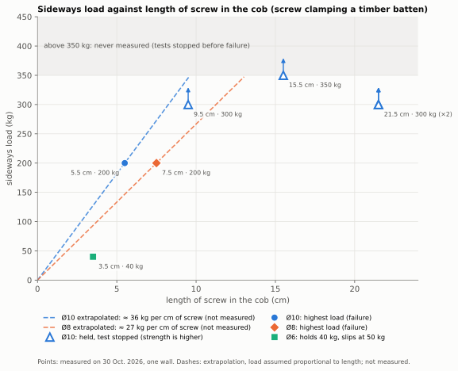

Screws in cob


Can you screw into cob? Earth building guides say yes, but give no detail: no diameter, no length, no load. We tested a wall to give those figures.
What we found
- The screws: good-quality fully threaded structural timber screws, 8 and 10 mm in diameter, driven into a 5 to 6 mm pilot hole.
- Sideways (in shear), 300 kg is easily reached. What
matters most is the length of screw in the cob:
- 200 kg from 5.5 cm with Ø10, and from 7.5 cm with Ø8;
- at least 300 kg from 9.5 cm with Ø10;
- a small Ø6 screw 3.5 cm in already holds 40 kg.
- These figures hold for a screw fixing a timber batten against the wall. The batten makes the whole stiffer than a screw alone.
The test rig
A timber board, like a batten, is screwed against the wall by a single screw. It is pulled downwards along the wall, like a hanging load, and the load is read on a crane scale. Eight tests on 30 October 2026, on the dry cob wall of a garden shed at least 50 years old, at Clos Poulain, near Rennes (Brittany, France), with ordinary tools.
Strength against screw length

Points are measurements. The dashes extend them by assuming the load grows with the length of screw in the cob: this is an extrapolation, not a measurement. Nothing was measured above 350 kg.
Going further
The paper gives the details: driving and the pilot hole, advice, limits, the readings and how we interpret them. Coming next: pull-out tests (screws pulled out of the wall), in November 2026.
Feedback
You have run similar tests, you see a mistake, you fix screws into earth walls: tell us (GitHub issues) or write to remi.cura+terre@gmail.com.